The fastest way to verify the install is to use the bundled simulator — no real hardware, no extra terminals. Launch the diagnostic, then:
vrmc_sim processes on UDP
multicast 239.192.0.42:23400 with sequential node IDs (5, 6,
7, …) and auto-connects.The simulator runs entirely inside the diagnostic's own build tree
(vrmc_sim next to vr_mc_diagnostic), so this workflow works
straight out of the box — no need to compile or run anything from
vr-mc-sdk separately.
To stop:
Once auto-connect lands, the first slave is selected and you can drive it straight away:
SWITCH_ON_DISABLED → READY_TO_SWITCH_ON → SWITCHED_ON →
OPERATION_ENABLED (badge turns green).+π/4 / −π/4 /
Home for one-click setpoints.[deg] in the readout strip to switch the spinbox + sliderIf anything in this sequence fails, look at the Log dock at the bottom: every SDO error, PDO online event, and demo-process lifecycle line lands there with a timestamp.
Connection → Connect… (Ctrl+K).
| Transport | Fields | When |
|---|---|---|
| UDP multicast | Group, Port | Loopback against sim, multi-host bench |
| ZLG USB-CANFD | Channel, bitrate, FD-bitrate | Real drives |
Both take First node id + Count. The diagnostic registers that
range sequentially into master_mgr.
Reconnect (Ctrl+R) replays the last config. Disconnect is
idempotent — worker thread survives for the next connect.
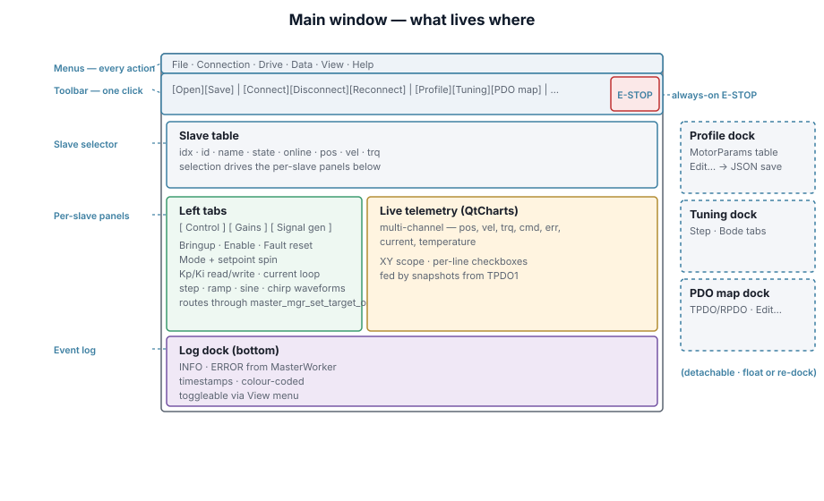
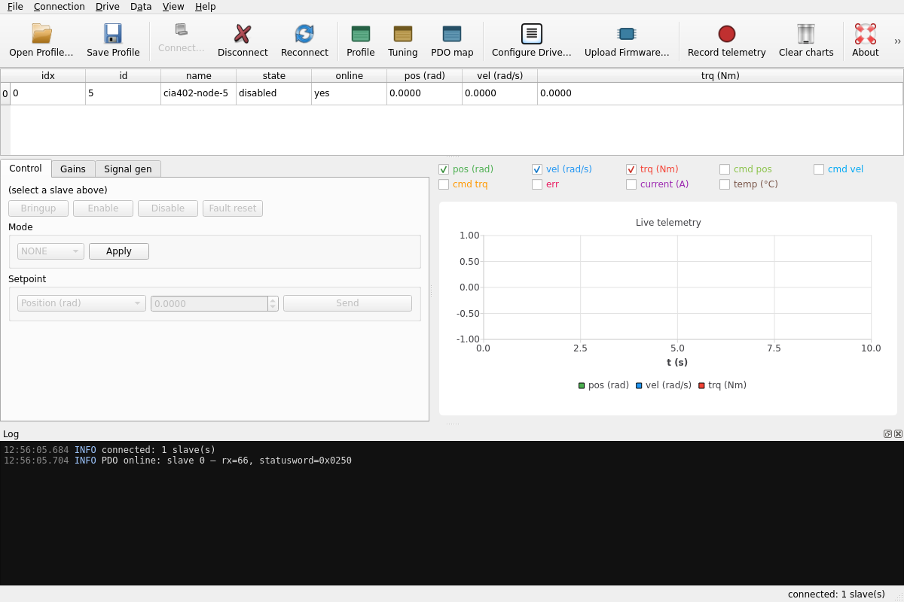
Toolbar groups (L→R): File · Connection · View (dock toggles) · Drive ·
Data · Help · E-STOP (always right-anchored, Space shortcut).
Slave table = one row per slave. Selection drives every per-slave panel.
Drives the CiA 402 state machine:
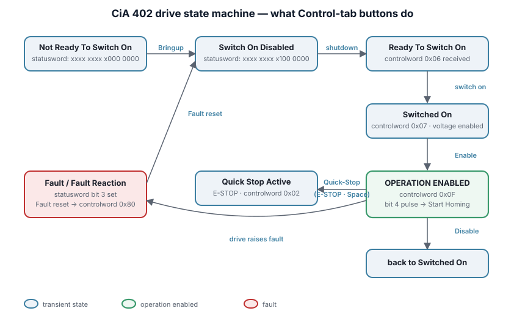
Mode selector + Setpoint spin box route through master_mgr_set_target_one.
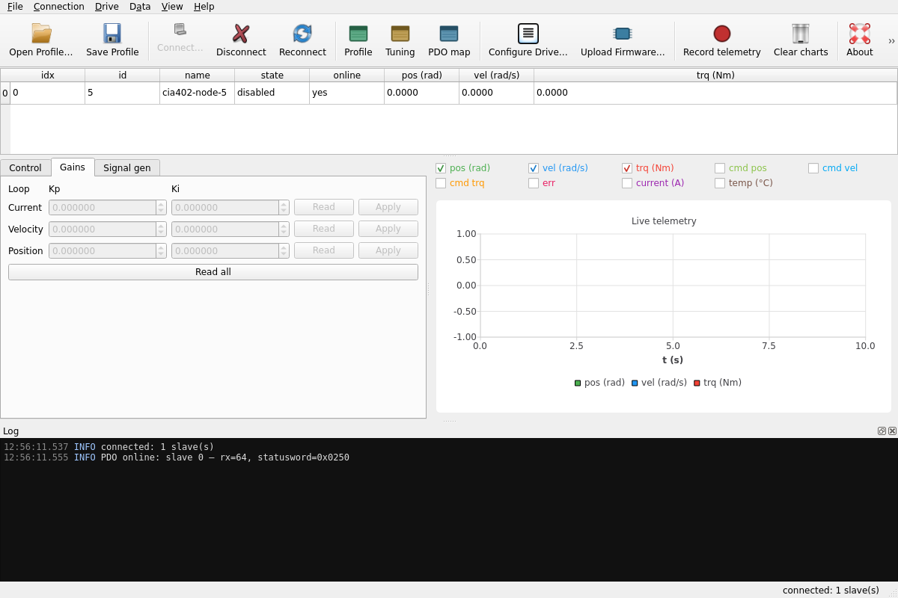
Per-loop (current / velocity / position) Kp+Ki. Read pulls current values via SDO; Write pushes back.
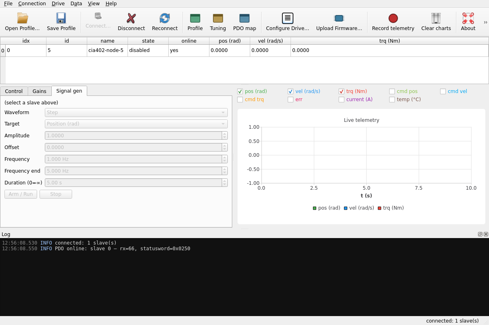
Waveforms: constant · step · ramp · sine · chirp. Chirp feeds the Bode sweep.
Created hidden + floating. Toolbar View group brings them out.
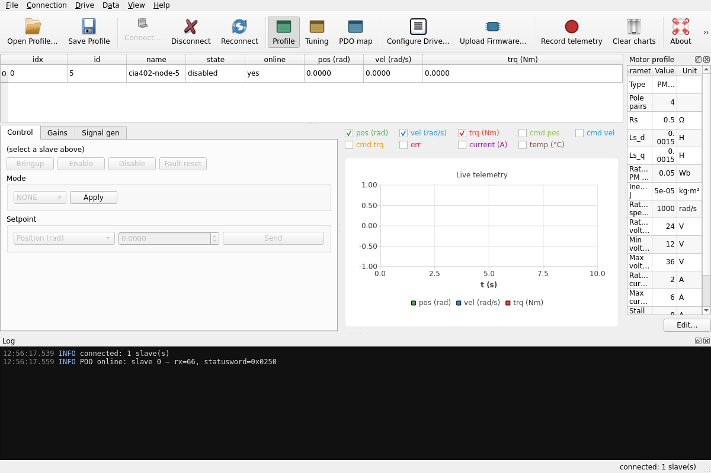
Read-only 15-row MotorParams table (type, pole pairs, Rs, Ls_d, Ls_q,
rated flux, inertia, voltage/current limits). Edit… opens a modal;
File → Save Profile persists to JSON.
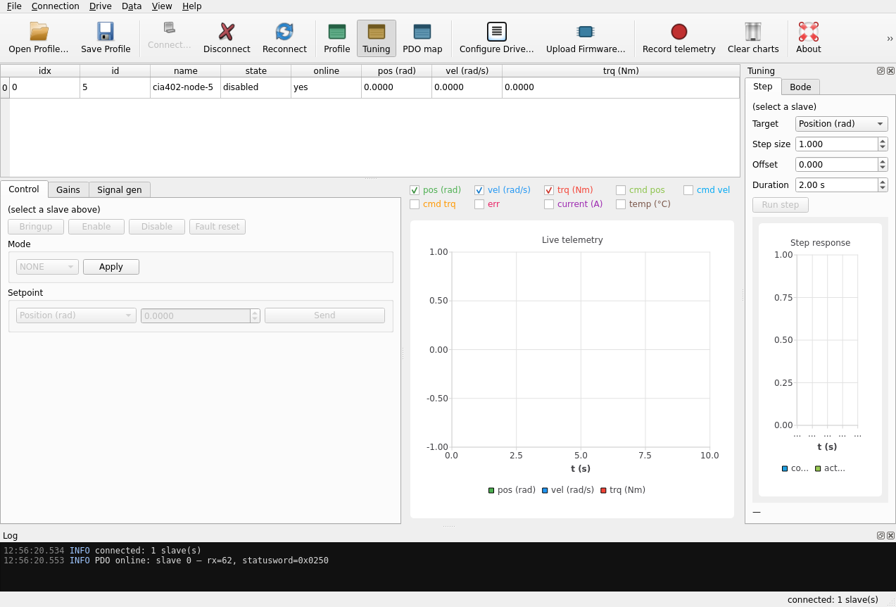
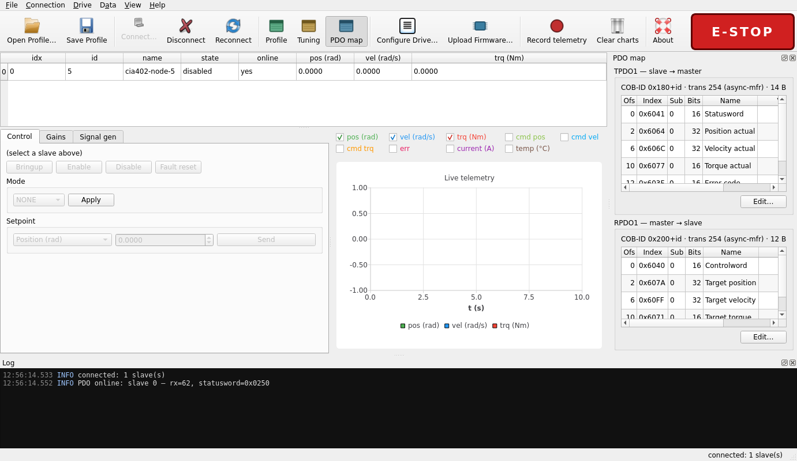
Two sections (TPDO1 / RPDO1). Offset, OD index, sub, bits, name, live value. Edit… runs the CiA 301 §7.2.2.2 remap dance via SDO.
Drive → Configure Drive… (Ctrl+Shift+C).
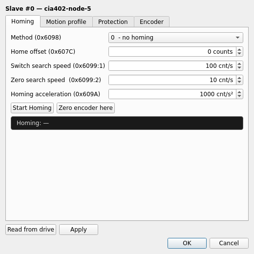
Modeless tabbed dialog. Opens with the selected slave, kicks off a batch SDO read so the form reflects the drive.
| Field | OD |
|---|---|
| Method | 0x6098 |
| Home offset | 0x607C |
| Switch search speed | 0x6099:1 |
| Zero search speed | 0x6099:2 |
| Homing acceleration | 0x609A |
Start Homing — mode=6, controlword 0x000F → 0x001F:
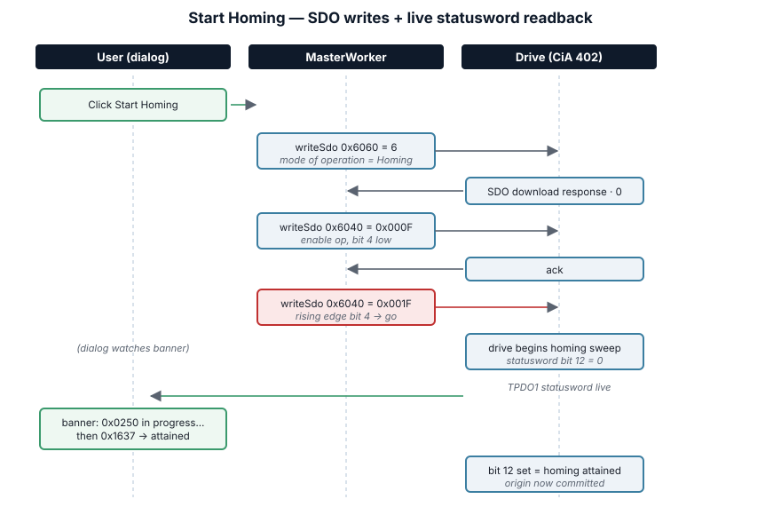
Zero encoder here — reads 0x6064, writes 0x607C, updates form.
Profile velocity 0x6081, accel 0x6083, decel 0x6084, quickstop
decel 0x6085.
Following error 0x6065 + timeout 0x6066, pos limits 0x607D:1,2,
max speed 0x6080, max torque 0x6072. Zero torque here reads
0x6077, writes 0x60B2.
Resolution 0x608F:1, gear ratio 0x6091:1,2, feed constant
0x6092:1,2.
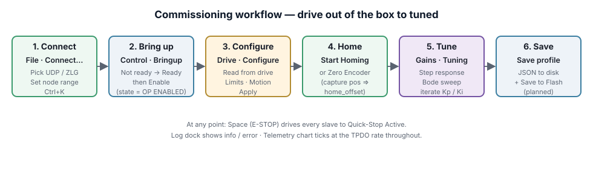
Safety. Keep
Spacereachable the first time you enable a new drive. Wrong limits + wrong mode = motion outside the safe envelope in one control cycle.
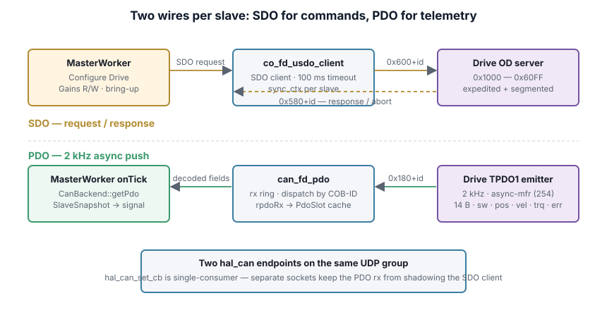
Two hal_can endpoints per connection — one SDO, one PDO — because
hal_can_set_cb is single-consumer.
Edit flow: PDO map dock → Edit… → add/remove from CiA 402 catalog → OK. Under the hood:
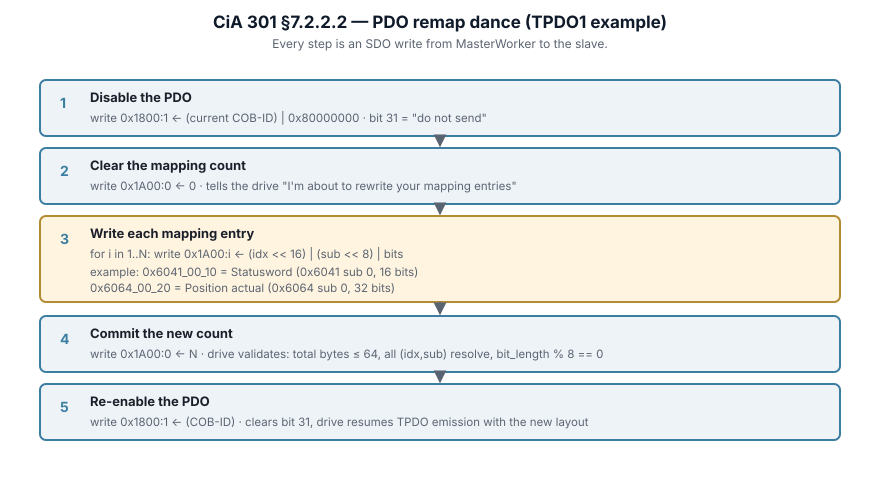
Against the simulator every step SDO-aborts (0x06020000) because the
sim doesn't expose 0x1600/0x1A00. Against real drives the sequence
completes and the TPDO layout changes take effect on next emission.
Ctrl+Shift+R) — toggle; currently a placeholder (CSV-per-snapshot planned).Red button, toolbar right edge. Space app-wide. On click: stop
generator → master_mgr_disable_all → every slave → Switch On
Disabled. Re-enable via normal Control tab Bringup + Enable.
| Combo | Action |
|---|---|
Ctrl+K |
Connect… |
Ctrl+R |
Reconnect |
Ctrl+E |
Edit motor profile |
Ctrl+Shift+C |
Configure Drive… |
Ctrl+Shift+R |
Toggle recording |
Ctrl+O / Ctrl+S |
Open / Save profile |
Space |
E-STOP |
F1 |
Documentation |
| Symptom | Cause | Check |
|---|---|---|
| Configure Drive: "all fields aborted" | Drive doesn't expose these OD objects | Use a real drive |
Session timeout |
Drive not responding / wrong id / bus down | Verify id + transport |
PDO Value column stays — |
No TPDO — not emitting or COB-ID mismatch | Log "PDO online" line should appear |
| E-STOP disabled | Not connected | Connect first |
| Start Homing no effect | Drive not Operation Enabled | Enable on Control first |
| Floating dock off-screen | Window moved | Toggle from toolbar/View menu |
hal_can_udp)Two sockets per connection; both bound 0.0.0.0:23400 with
SO_REUSEADDR. Joined 239.192.0.42, IP_MULTICAST_LOOP=1. 12-byte
header [tag·4][cob_id·4][dlc·1][flags·1][rsvd·2]; tag filters self-echoes.
hal_can_zlg)libcontrolcanfd.so via dlopen() at runtime; ships in
src/backends/zlg/lib/ (RPATH-wired). One endpoint per channel; PDO
not yet plumbed (V1 is SDO-only).
| Index | Sub | Field | Where |
|---|---|---|---|
0x1010 |
1 | Store parameters | Save to Flash (planned) |
0x1011 |
1 | Restore defaults | Load from Flash (planned) |
0x1400+n |
1 | RPDO COB-ID | PDO remap |
0x1600+n |
0..N | RPDO mapping | PDO mapping editor |
0x1800+n |
1 | TPDO COB-ID | PDO remap |
0x1A00+n |
0..N | TPDO mapping | PDO mapping editor |
0x603F |
0 | Error code | TPDO1 |
0x6040 |
0 | Controlword | Control · Homing |
0x6041 |
0 | Statusword | TPDO1 · banners |
0x6060 |
0 | Mode of operation | Control · Homing |
0x6064 |
0 | Position actual | TPDO1 · Zero encoder |
0x6065 |
0 | Max following error | Protection |
0x6066 |
0 | Following error timeout | Protection |
0x606C |
0 | Velocity actual | TPDO1 |
0x6072 |
0 | Max torque | Protection |
0x6077 |
0 | Torque actual | TPDO1 · Zero torque |
0x607A |
0 | Target position | RPDO1 |
0x607C |
0 | Home offset | Zero encoder here |
0x607D |
1,2 | Position limits | Protection |
0x6080 |
0 | Max motor speed | Protection |
0x6081 |
0 | Profile velocity | Motion |
0x6083 |
0 | Profile acceleration | Motion |
0x6084 |
0 | Profile deceleration | Motion |
0x6085 |
0 | Quickstop deceleration | Motion |
0x608F |
1 | Encoder resolution | Encoder |
0x6091 |
1,2 | Gear ratio | Encoder |
0x6092 |
1,2 | Feed constant | Encoder |
0x6098 |
0 | Homing method | Homing |
0x6099 |
1,2 | Homing speeds | Homing |
0x609A |
0 | Homing acceleration | Homing |
0x60B2 |
0 | Torque offset | Zero torque here |
0x60FF |
0 | Target velocity | RPDO1 |
| Flag | Value | Purpose |
|---|---|---|
-a, --auto-connect |
— | Connect with defaults on startup |
--quit-after |
ms | Quit after N ms (smoke tests) |
--screenshot |
path[:ms] | Grab window → PNG after delay |
--show-panel |
name | Open dock/dialog: pdo-map/tuning/profile/drive-config |
--show-tab |
idx | Select left-tab (0/1/2) |
--only-dialog |
— | With --screenshot: capture only the top dialog |
Built against Qt 6 · powered by vr-mc-sdk · VinRobotic